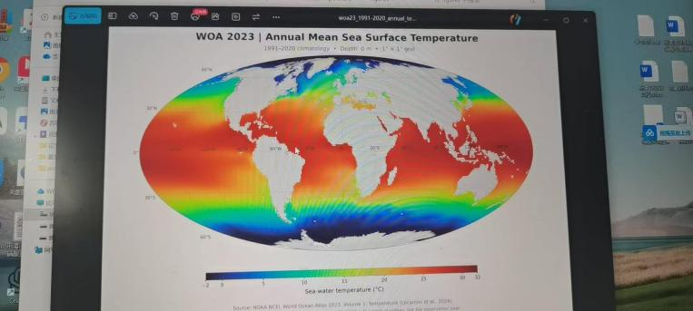
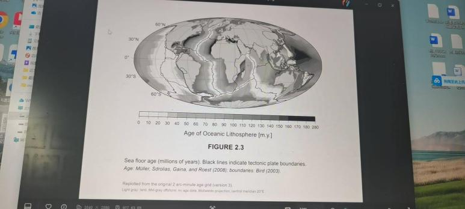
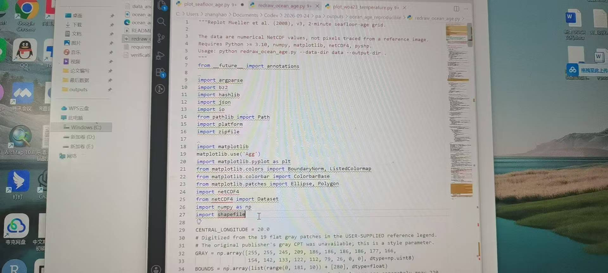

Basins, Straits, and Topography
Driving question: Why is seafloor topography more than a background to current maps?
Class notes
The ocean covers about 71% of Earth's surface, with a mean depth of about 3,734 m; mean land elevation is about 840 m. The deepest point, in the Mariana Trench, is about 11,000 m.
Continental shelves, slopes, rises, abyssal plains, mid-ocean ridges, and trenches are shaped by plate tectonics and sedimentation, and they determine whether water at different depths can exchange directly.
A sill is like a threshold: it restricts deep passages but is not a sealed wall. Dense overflow water can continue to descend after mixing, or settle at a shallower level; deep renewal depends on density contrast, transport, and mixing.
- Basins, ridges, and passages jointly set connectivity.
- A gridded map does not mean every cell has a direct sounding.
- Bathymetry: shipborne acoustics, satellite gravity, and GEBCO/ETOPO grids.
In my own words
I used to think seafloor topography was just background for current maps. Later I saw that sills, straits, and ridges decide which layer of water can enter. Put a 4,000 m basin next to an 800 m sill: deep does not mean closed.
What I did not understand + How I worked it out
What I did not understand at first: with an 800 m sill, can the deep water of a 4,000 m basin never be renewed?
What I later worked out: overflow water that remains denser than the basin water after mixing can descend along the slope. Renewal depends on density contrast, transport, and mixing, not on two depth numbers.
Week 2 exit ticket
This week's record: Learned to use Trae to help draw figures and used code to reproduce a sea-surface-temperature map and a seafloor-age map.



Sources for this session: Elsevier · Table of contents · GEBCO · Bathymetry grid